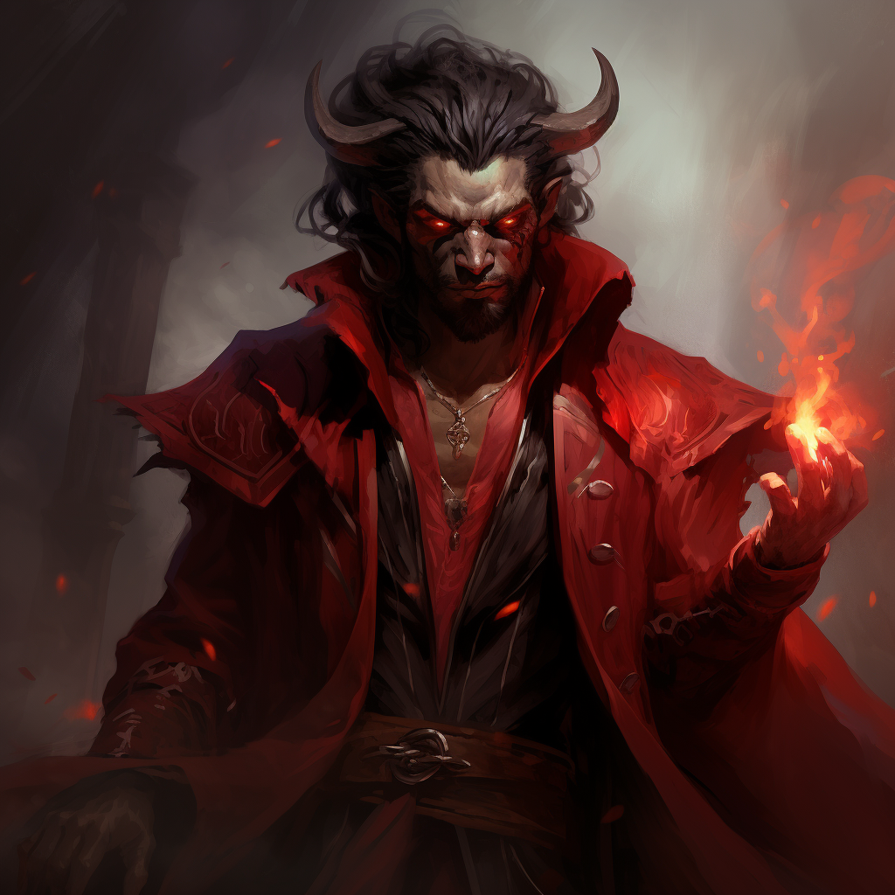
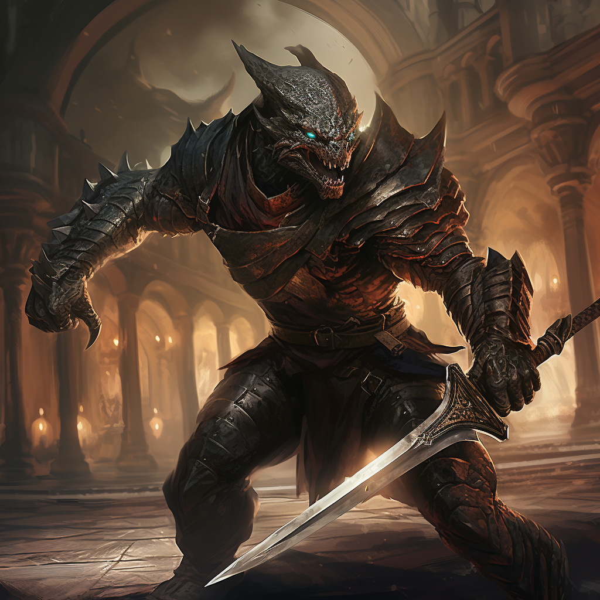
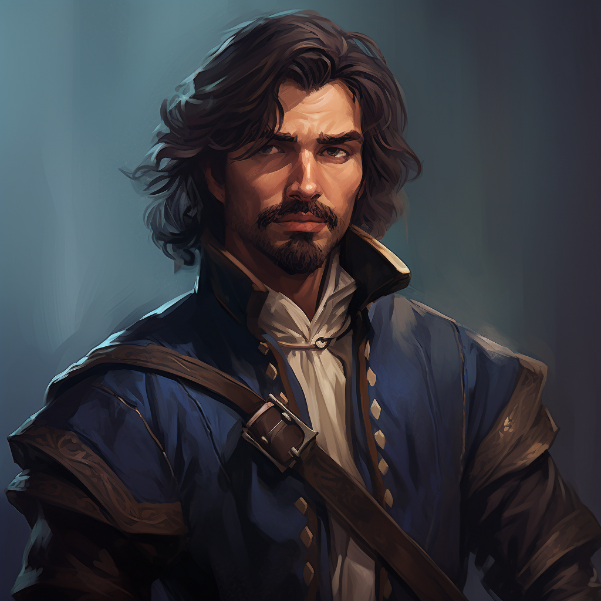

Kath’Dal

Character Biography
Kath'dal, a survivor of a cruel and tumultuous upbringing, was born in the shadow
of the imposing Sunset Mountains. His mother, a human servant to a high-ranking member
of the nefarious Cult of the Dragon known as the "Wearer of the Purple," brought him
into a world fraught with hardship and prejudice. Kath'dal's very existence was marked
by his infernal lineage, making his life even more challenging.
Growing up as the son of a servant, Kath'dal experienced a harsh and unforgiving existence.
His mother, seemingly indifferent to his well-being, showed no signs of motherly love,
leading others to suspect that he was the result of a "forced encounter." The cult members
took every opportunity to belittle him, subjecting him to constant ridicule and derogatory
names such as "dirty infernal." As a cruel reminder of his supposed impurity, they regularly
doused him with buckets of water, aiming to "wash away the filth."
Amidst the torment, Kath'dal's life took an unexpected turn when he formed an unlikely bond
with Elenia, the daughter of the influential Dragonclaw. Over three years, their secret
friendship blossomed into the possibility of romance. However, their happiness was short-lived
when a Keeper of the Secret Horde accidentally discovered their relationship. Enraged by the
perceived impropriety, the Keeper unleashed a horde of skeletons upon the Dragonclaw and his
followers, resulting in a bloodbath.
Desperate to escape the chaos, Kath'dal and Elenia made a daring attempt to flee together
by plunging into the treacherous Chianthor River. The unforgiving current proved too formidable,
and Kath'dal awoke to the devastating sight of Elenia's lifeless body. Yet, amidst the sorrow, a
figure stood before him—his own father, a High Devil.
The High Devil, recognizing his son's pain and thirst for revenge, made a sinister offer. In exchange
for Kath'dal's servitude and the condemnation of the cultists' souls to the Nine Hells for eternal
torment, he promised unimaginable power and the means to exact vengeance upon the Cult of the Dragon.
Witnessing the dark magics wielded by the cultists and driven by his burning desire for retribution,
Kath'dal found himself unable to resist the allure of such power.
Accepting his father as his patron, Kath'dal became a Warlock, granted otherworldly abilities
to carry out his quest for revenge. However, his father placed a binding stipulation upon him—
a truth that would haunt Kath'dal for eternity. The inability to lie became his curse,
as speaking an untruth would subject him to agonizing infernal fire, leaving him in debilitating torment.
With his newfound powers and his wit and charm as his weapons, Kath'dal is determined
to foil his enemies and bring about the downfall of the Cult of the Dragon. In his interactions,
he carefully avoids making statements that are overtly untruthful, instead relying on clever
wordplay and deception to navigate treacherous situations.
Kath’Dal's Stats
- Race: Tiefling
- Class: Warlock(Fiend) 3
- Class: Sorcerer(Necromantic Soul) 9
- Level: 12
- Health: 141
- Armor: 17
- Str: 10
- Dex: 15
- Con: 20
- Int: 14
- Wis: 14
- Cha: 20
Grim

Character Biography
In the sprawling metropolis of a large city, Grim and his younger brother, Sasashi,
found themselves trapped in the unforgiving grip of poverty. Born into the slums,
their lives were characterized by struggle and hardship from an early age. With
limited opportunities and a desperate need to survive, they were forced to find
unconventional means to earn even the most meager sustenance.
In their quest for survival, the brothers stumbled upon a gladiator arena. The
raucous cheers and the promise of a reward for victory enticed them, offering
a glimmer of hope amidst the gloom of their circumstances. Recognizing the
potential for earning enough money to secure their basic needs, Grim and Sasashi
made the daring decision to step into the arena and embrace the life of gladiators.
As they immersed themselves in this brutal and unforgiving world, Grim became
the embodiment of strength and resilience. Towering over his opponents, he possessed
an imposing physique that struck fear into the hearts of those who faced him. His raw
power and unyielding determination made him a formidable force within the gladiatorial circuit.
However, Grim's true strength lay not only in his physical prowess but also in his unwavering
devotion to his brother. Sasashi, despite lacking Grim's size and brawn, possessed a remarkable
agility and quick thinking that complemented his brother's power. Together, they formed an
unbreakable bond, relying on each other's strengths and supporting one another in their
shared pursuit of survival.
Their reputation as a dynamic duo began to spread throughout the city's underworld.
They became known as "Grim and Sasashi, the Brothers of Desperation," drawing crowds
to witness their spectacular displays of skill and determination. With each victorious
battle, they earned a meager income, just enough to scrape by and keep hunger at bay.
Beyond the gladiatorial arena, Grim and Sasashi harbored dreams of a better life.
The constant struggle had ignited a spark within them, a burning desire for something
more than mere survival. They yearned to escape the oppressive shackles of poverty
and make a name for themselves outside the confines of the arena.
Driven by this shared ambition, Grim and Sasashi tirelessly trained and honed
their combat skills. They sought to transcend their current circumstances and
use their prowess as gladiators to forge a new path. Through their tenacity
and determination, they aimed to secure a future where they could rise above
the slums and create a life of comfort and opportunity.
While the path ahead remained uncertain and fraught with danger, Grim and Sasashi
refused to succumb to despair. They would face each challenge with unwavering resolve,
relying on their bond as brothers and their indomitable spirit to guide them through
the trials that awaited.
As Grim and Sasashi stepped into the arena once again, they were not merely fighting
for survival. They fought for a chance to break free from the chains of poverty and leave
their mark on a world that had forgotten them. United in their pursuit of a better life,
the Brothers of Desperation stood tall, ready to face any opponent and seize the opportunities that lay ahead.
Grim's Stats
- Race: Dragonborn (Bronze)
- Class: Barbarian(Berserker) 12
- Level: 12
- Health: 140
- Armor: 19
- Str: 23
- Dex: 14
- Con: 18
- Int: 8
- Wis: 10
- Cha: 14
Doyle Hawke

Character Biography
Doyle Hawke, a charismatic and agile half-elf, had once served with distinction
as a member of the esteemed City Watch in Waterdeep. Admired for his quick
reflexes, expert swordplay, and silver tongue, he had earned a reputation
as a formidable swashbuckler within the city's ranks. However, his promising
career took an unexpected turn when a scandal emerged, tarnishing his name
and leading to his dismissal from the force.
The details of the scandal that plagued Doyle remain shrouded in mystery.
Whether it was a false accusation or a momentary lapse in judgment, the
repercussions were swift and severe. Stripped of his badge and reputation,
Doyle found himself cast aside, his dreams of a long and prosperous career
in law enforcement shattered.
Faced with an uncertain future and a need to redeem himself, Doyle caught
the attention of the Harpers, a secretive organization dedicated to preserving
balance and safeguarding the realms. Recognizing his exceptional skills and his
potential for redemption, they extended an invitation to join their ranks.
Embracing this chance for a fresh start, Doyle eagerly accepted the Harpers' offer.
The organization provided him with a new purpose, a chance to channel his talents
towards a noble cause. His first mission as a Harper was to assist a senior member
in investigating a series of unusual happenings around the town of Greenest.
Doyles's Stats
- Race: Half-Elf
- Class: Rogue (Swashbuckler) 12
- Level: 12
- Health: 83
- Armor: 16
- Str: 10
- Dex: 20
- Con: 12
- Int: 13
- Wis: 9
- Cha: 16